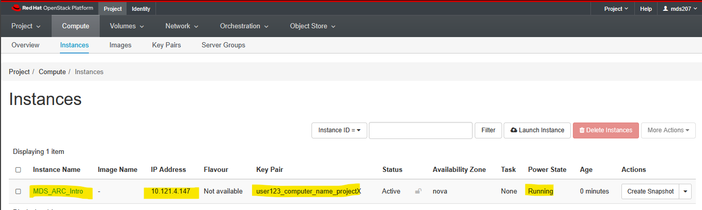

Prerequisite
Download and install a tool like Putty, MobaXTerm or Termius on your computer.
The most commonly used, but basic program is PuTTy.
The one we recommend for Windows users is MobaXTerm - it provides all the important remote network tools (SSH, X11, RDP, VNC, FTP, MOSH, …) and Unix commands (bash, ls, cat, sed, grep, awk, rsync, …) to Windows desktop, in a single portable exe file which works out of the box.
Termius is another recommended SSH client that works on macOS, Windows, Linux, iOS and Andriod.
End-Users are responsible for ensuring that they comply with the license conditions for any of these software.
Connect to your instance
In addition to being extremely comprehensive, the Exeter OpenStack cloud has a relatively easy (but detailed!) interface for interacting with its offerings. All you have to do is log in via a web-browser and most of the functionality of the is available for you and relatively easy to use.
To get started go to the following URL and login with your University of Exeter username (in the format of user123) the domain (exeter.ac.uk), and the password you use when logging onto your university resources.

Command Line Connection
The simplest way you can connect to your instance is using SSH (secure shell). If you are happy using the command line only there are some other software that has additional functionality, and looks better. There are many choices - just Google ‘windows ssh client’
The most commonly used, but basic program is PuTTy. The one we recommend for Windows users is MobaXTerm - it provides all the important remote network tools (SSH, X11, RDP, VNC, FTP, MOSH, …) and Unix commands (bash, ls, cat, sed, grep, awk, rsync, …) to Windows desktop, in a single portable exe file which works out of the box.
Termius is another recommended SSH client that works on macOS, Windows, Linux, iOS and Andriod.
In this section of the workshop we will create our Instance in Exeter’s OpenStack system.
If you have an instance from a previous session do not create another one. Please go to the Managing OpenStack page and restart your existing instance.
Otherwise let’s get on and launch the instance we need for our workshop !
Once it turns white and the ‘Status’ changes to ‘Active’, you should copy the IP address to the clipboard
Copy the IP address address to the clipboard
note: above is an example where the IP address is 144.173.115.209 (yours will be different). We will need it in a moment to connect via X2Go remote desktop. Make sure you copy the whole address and nothing but the address.
Congratulations you have ‘built’ a new computer to use for the rest of your course.
Next, you will learn how to connect to it from your PC
Acknowledgements
We did not create this content alone! Inspiration, tips, and resources have been borrowed from multiple sources.